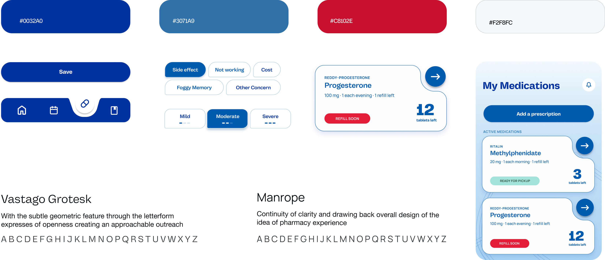
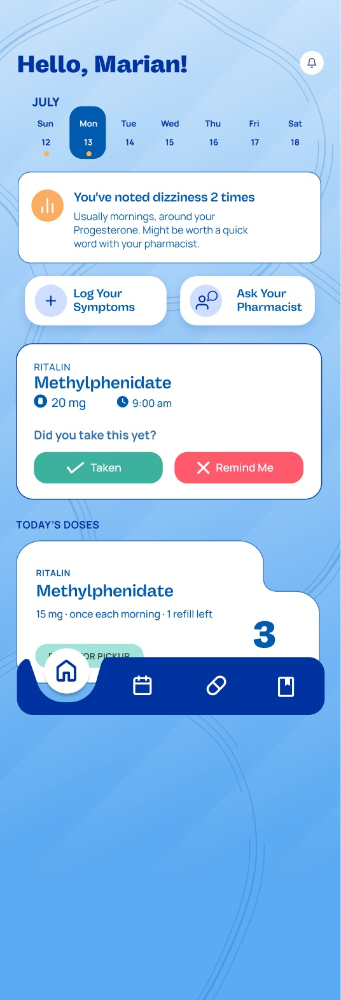
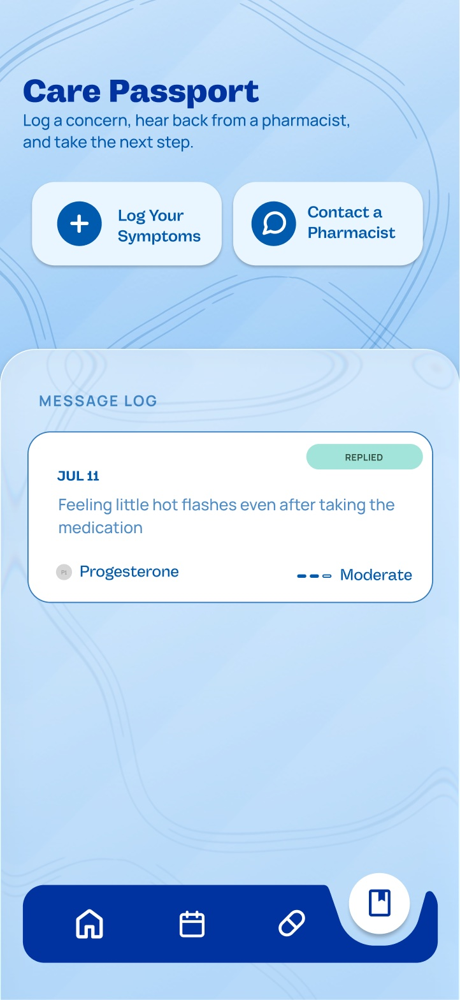
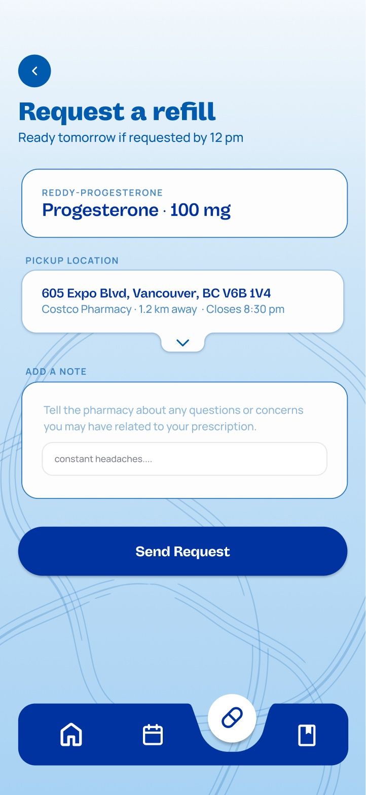
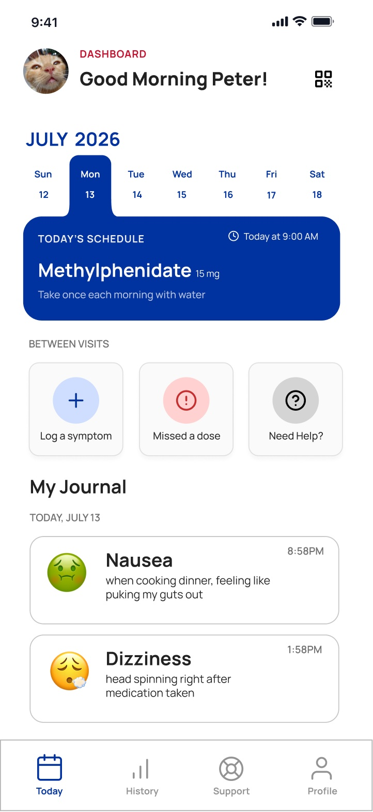
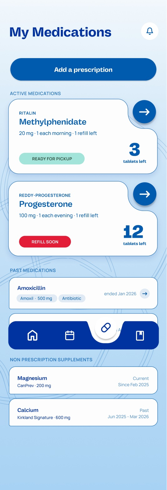
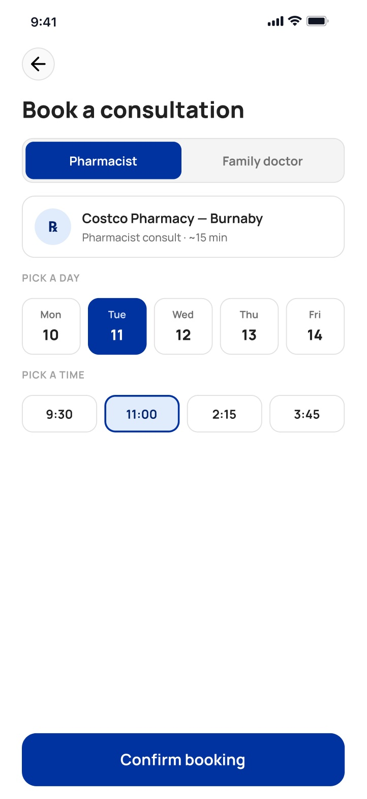
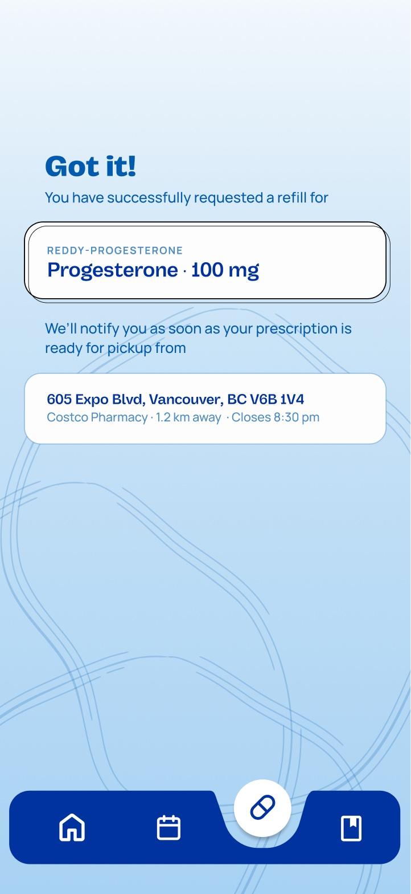
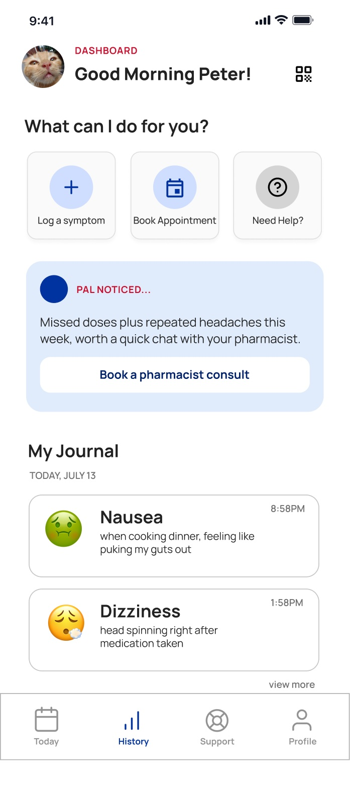

Care that doesn’t stop at the counter.
Costco CarePath
A medication companion for Costco Pharmacy members on long-term prescriptions, linking what happens at home back to their pharmacist.

Motivated at pickup,
alone at home.
People on long-term medication leave the pharmacy ready to start, then support disappears.
Costco Pharmacy already offers medication reviews, private counselling and minor-ailment care, but it presents them service by service, so members still treat it as a pickup point. Refills, appointments and tracking live apart, and nothing connects a side effect at home to the pharmacist.
How might we extend Costco Pharmacy’s relationship beyond the counter, so members on long-term medication feel supported during treatment?
Five testers,
three things to fix.
Moderated tests with long-term medication users, Gen Z to 55+: log a symptom, prepare for a pharmacist, check what’s left to refill.
Our first version kept medications under Profile, booked pharmacist appointments and offered “Pal Insights”, AI notes on logged symptoms.
Information was scattered
Medications hid under Profile, so testers couldn’t see what they had left or when to refill.
No proof anything worked
All five hit doubt over a booking, who to contact or where care info lived. None could tell if an appointment went through.
The AI felt like a bot
All five questioned the journal or “Pal Insights”. It read as an AI diagnosis, and testers worried about their data.
“Should show how many refills are left, reminders to call doctor to order more refills.”
Test participant
A pharmacy app,
calm, not clinical.
The final app keeps Costco’s red and blue, softened with rounded shapes.
A home that says what’s next
Today’s dose with Taken or Remind me, and refill status before it’s urgent.
Logs that reach a person
Every symptom ties to a medication. Members choose which logs their pharmacist sees, then see when they reply.
Refill in one flow
Straight from the reminder: no Rx number, pick a pickup location, add a note for the pharmacist.



What testing
changed.
Each finding became a design change. A second session with two of the testers caught small touch targets, an X that read as delete and too much blue, so we toned the interface down and made it consistent.
Medications got their own tab
Status labels like Ready for pickup and Refill soon, with tablets left in large type.


Every action confirms itself
Logging a symptom or booking an appointment ends on a clear confirmation and a next step.


Insights point to a pharmacist
Pal Insights became a plain pattern note that suggests a word with your pharmacist, never a diagnosis.

What I owned
Interaction design
- Home dashboard: dose check-in, pattern nudge, key actions
- Symptom logging flow, from severity to confirmation
Visual system
- Design system built on Costco’s red and blue
- Type scale and spacing pass across final screens
Research
- Early journey map
- Synthesis of the “felt like an AI bot” finding
Presentation
- Presented the design system and core flows in the final pitch
Looking back
A decision I pushed for
I proposed a dedicated medications area with refill status, modelled on Apple Health’s medication list. Testing backed it: all five testers valued seeing their medication status, and Max didn’t expect to find it under Profile. It became the Medications tab and the one-flow refill.
What I’d do next
Test with pharmacists, since the app assumes they’ll read and reply to symptom logs, and check with Costco whether the QR pickup pass fits real pharmacy procedure. We flagged both to validate later.